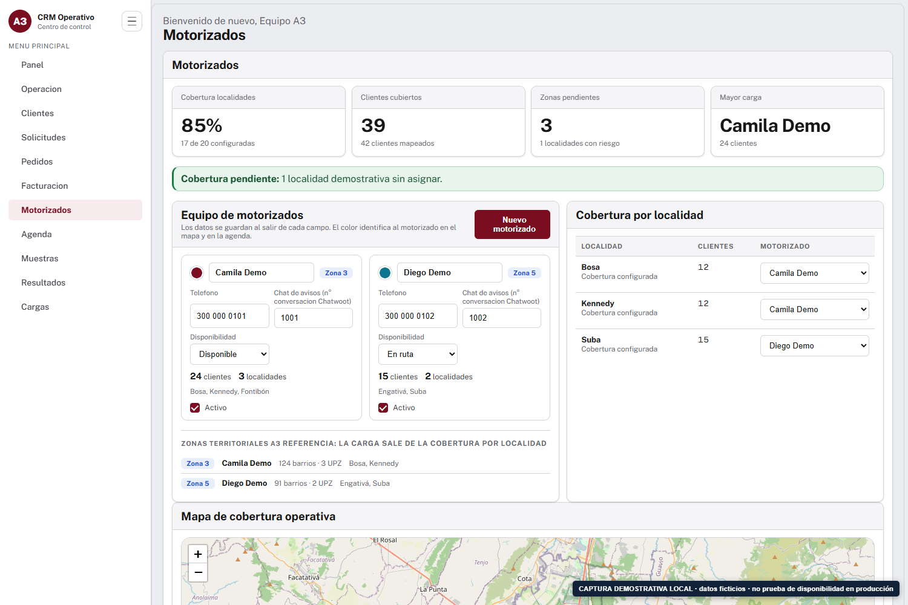
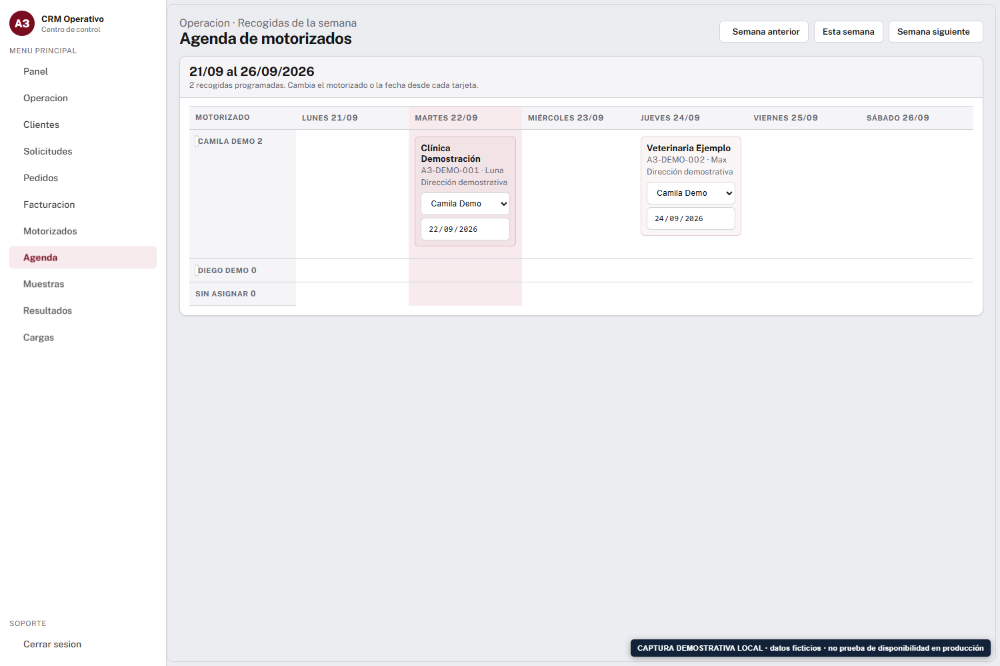
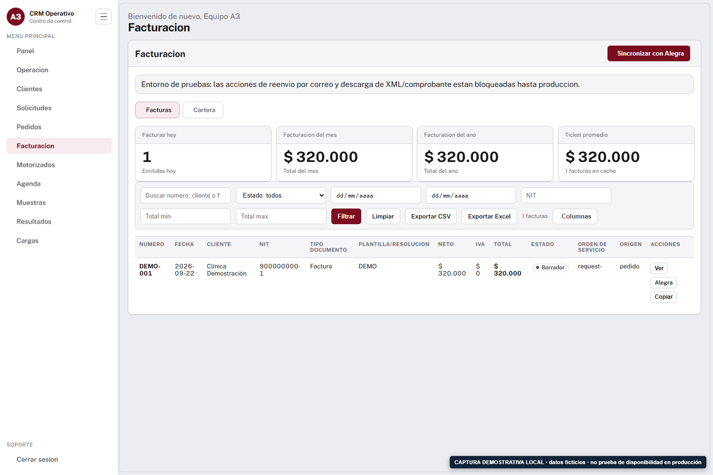
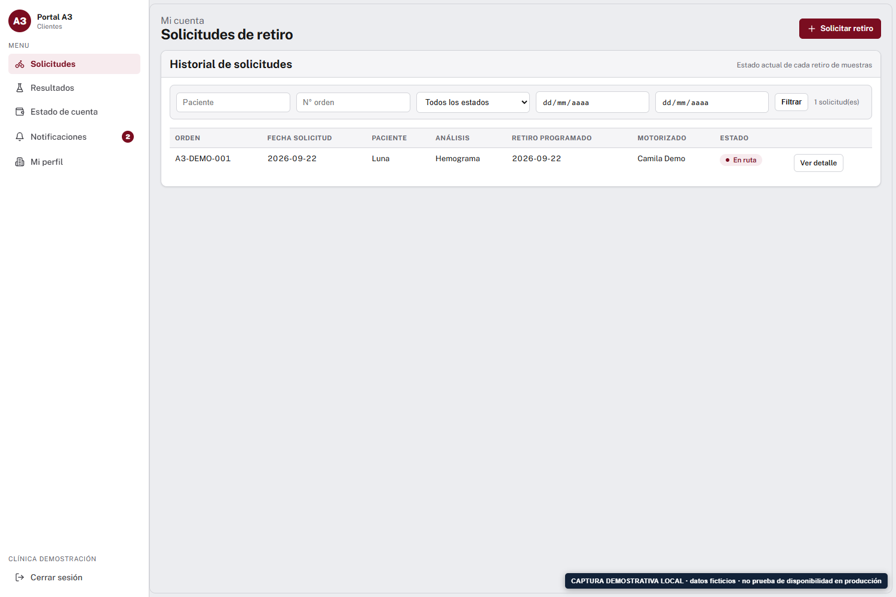
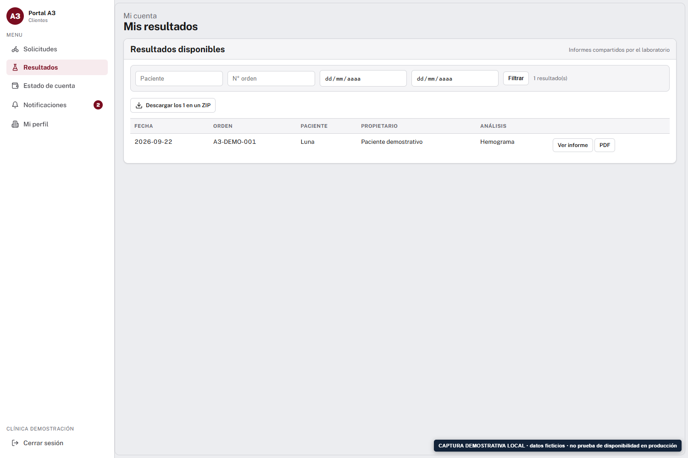
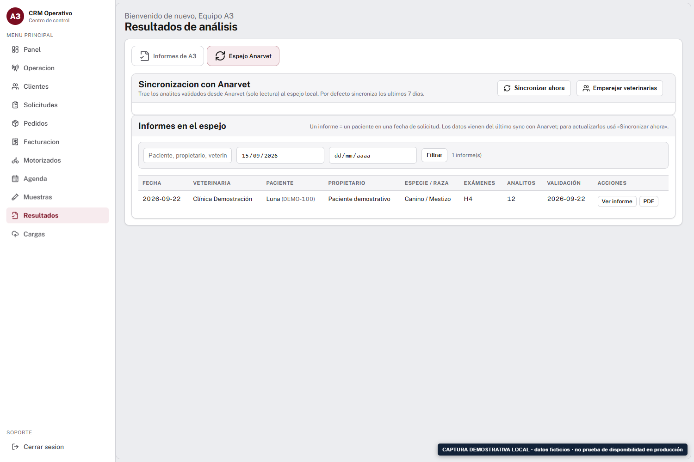

Solicitud registrada
16/04, reunión 1: asignación automática por zona, posibilidad de excepción manual y calendario.
13/05, reunión 4: alta de motorizado, localidad/zona, clientes asignados y reasignación desde recepción.
A3 Laboratorio Veterinario
Un recorrido documental y visual para revisar qué se pidió, qué se precisó después y cómo se encuentra resuelto cada frente en la versión inspeccionada.
Corte de evidencia
22 de septiembre de 2026
Fuentes: registros de reuniones, decisiones versionadas, plantillas y pruebas locales del repositorio.
Propósito: facilitar una demostración conjunta y evitar que una función existente, una decisión de alcance o una dependencia externa se confundan entre sí.
Este documento no reemplaza contrato, acta firmada ni prueba de disponibilidad productiva.
https://a3-plataforma.onrender.com/health el 22/09/2026, Render respondió HTTP 503: Service Suspended, con x-render-routing: suspend-by-user. Por ello, las imágenes de este informe son capturas locales de las plantillas reales, con datos ficticios y una marca visible; no afirman que producción esté disponible hoy.16/04, reunión 1: asignación automática por zona, posibilidad de excepción manual y calendario.
13/05, reunión 4: alta de motorizado, localidad/zona, clientes asignados y reasignación desde recepción.
22/04: recepción confirma o cambia antes de notificar. 07/07: GPS real queda como mejora futura. 28/08: el motorizado recibe avisos, no inicia sesión.
| Pregunta operativa | Estado verificable | Límite actual |
|---|---|---|
| Crear, editar o desactivar motorizados | Sí Tarjeta con nombre, teléfono, disponibilidad, chat de avisos, color y estado activo. | No hay eliminación definitiva ni bitácora completa de versiones del motorizado. |
| Varias localidades y clientes | Sí Cobertura por localidad y asignación directa por cliente. | El catálogo territorial nativo cubre 20 localidades de Bogotá. |
| Municipios, incluido César | Manual Se puede vincular el cliente o reasignar la recogida a un motorizado. | No existe modelo territorial específico de municipios ni cobertura temporal por fechas. |
| Reemplazo temporal / redistribución | Por recogida Agenda permite cambiar motorizado y fecha. | No hay regla recurrente ni rebalanceo automático de la carga. |

Dónde está: menú interno Motorizados. La tarjeta permite editar datos y activar/desactivar; la tabla lateral asigna cada localidad. Captura local con datos ficticios.
Usar “Semana anterior”, “Esta semana” o “Semana siguiente”. La grilla presenta una fila por motorizado, incluso sin carga.
Elegir el motorizado en el desplegable o modificar la fecha. Es una acción de operación, no una conversación visible para la veterinaria.

Dónde está: menú interno Agenda. La captura muestra las dos acciones disponibles dentro de cada tarjeta: lista de motorizado y campo de fecha.
| Solicitud | Fecha / llamada | Modificación o validación posterior | Estado al corte |
|---|---|---|---|
| Varias órdenes en una recogida; después decidir si se agrega otra o se continúa al pago. | 20/05 · R5 | 28/07 · R8 define pedido → órdenes → análisis. 21/08 · R9 registra demo aprobada: dos órdenes, un pago y una factura. | Implementado La decisión 011 indica una forma de pago por pedido y una factura acumulada. |
| Factura y pago en línea. | 22/04 · R2; 27/05 · R6; 28/07 · R8 | 21/08 · R9: el bot deja borrador en Alegra y una persona revisa/emite. 28/08 · D28 cancela la pasarela. | Sin pasarela automática Contabilidad gestiona el cobro; no hay enlace Wompi/Bancolombia generado por el sistema. |

Dónde está: menú interno Facturación. La fila demostrativa muestra el estado Borrador y acceso a Alegra. El importe y los datos son ficticios.
07/07, R7: se muestra portal para solicitar análisis, ver resultados y notificaciones. El GPS se reemplaza por estados de la orden.
Implementado El cliente entra con clínica y NIT, consulta solicitudes propias y abre el detalle.
El laboratorio publica el PDF; solo entonces aparece al cliente. Se permite abrir el informe, descargar PDF y descargar un ZIP de resultados filtrados.
Implementado El portal limita cada vista al client_id de la sesión.


| Solicitud / cambio | Registro | Resultado actual |
|---|---|---|
| Consultar estados, resultados y eventualmente entregar PDF. | 13/05 · R4: acceso solo lectura. 28/07 · R8: posible SQL de consulta. 21/08 · R9: se detallan estado, consulta por WhatsApp, documento y portal. | Espejo de solo lectura con sincronización manual, consulta y generación/publicación de PDF incorporadas después de la primera fase. |
| Mostrar proceso en tiempo real. | Acta de cierre borrador, 14/09: falta una fuente de estados, TLS/IP y resolver mapeos pendientes. | Dependencia externa El espejo muestra datos validados que lleguen desde Anarvet; no inventa ni calcula un estado que la fuente no provea. |

Dónde está: menú interno Resultados → Espejo Anarvet. “Sincronizar ahora” actualiza el espejo mediante lectura; “Emparejar veterinarias” atiende correspondencias pendientes. Captura local con fila ficticia.
ANARVET_ENABLED, credenciales, conectividad/TLS/IP y de la fuente de Anarvet.| Tema | Solicitud inicial | Cambio documentado | Cómo queda |
|---|---|---|---|
| Centro de conversación | 07/04 · R00a: revisar alternativa a LiveConnect. | 07/04 · R00a: acuerdo explícito de usar Chatwoot. | Código disponible Telegram y webhook Chatwoot; WhatsApp depende de cuenta Meta/Chatwoot operativa. |
| GPS en vivo | 22/04 · R2: motorizado más cercano por GPS. | 07/07 · R7: se deja como mejora posterior. | No incluido Sustituido por estados y reasignación manual. |
| Rol / login de motorizado | 22/04 · R2: usuarios limitados para mensajeros. | 28/08 · D28: solo personal interno y portal de veterinarias. | No incluido El motorizado recibe aviso en su conversación configurada. |
| Adjuntos, soportes y OCR en chat | 22/04 · R2 y 20/05 · R5: soportes/foto de orden. | 28/08 · D28: adjuntos y fotos fuera; la prueba de foto no era legible. | No incluido Contabilidad y recepción tratan esos casos por canal humano. |
| Pasarela de pago | Se evaluaron link/pasarela y Wompi/Bancolombia. | 28/08 · D28: cancelada; pago se deriva a persona. | No incluido Factura en borrador y gestión humana. |
Restablecer el servicio y confirmar /health, dashboard y portal.
Crear una recogida de prueba, ver su asignación y cambiar motorizado/fecha en Agenda.
Recorrer un pedido con una o dos órdenes y verificar el borrador con Contabilidad.
Publicar un resultado de prueba y comprobar su visualización en el portal y el canal configurado.
| [R00a] | Auditoria Alcance/reuniones/llamada-00a-2026-04-07.md · transcripción literal. |
| [R1]–[R8] | Auditoria Alcance/reuniones/llamada-01-2026-04-16.md a llamada-08-2026-07-28.md · resúmenes de reunión. |
| [R9] | Auditoria Alcance/reuniones/llamada-09-2026-08-21.md · fecha indicada como inferida por el propio registro. |
| [D28] | Auditoria Alcance/13-decisiones-alcance-2026-08-28.md · documento que declara prevalecer sobre inventarios anteriores. |
| [A14] | data/acta-cierre-final-a3-20260914.html · borrador para revisión y firma; no aceptación suscrita. |
| [E] | Rutas, plantillas y pruebas mencionadas en cada sección; capturas generadas por tools/scripts/capturas_demostrativas_a3.py. |